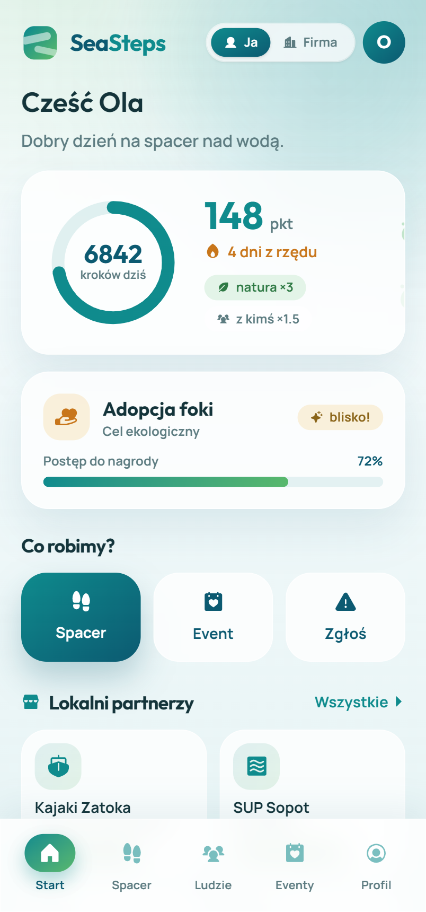

SeaSteps zamienia spacer w grę, która łączy Cię z ludźmi i naturą. Zbierasz punkty za ruch — więcej, gdy idziesz z kimś, blisko wody czy w lesie. Mniej scrollowania, więcej życia.

Praca, ekran, kanapa. Wiesz, że ruch by pomógł — ale samemu jakoś się nie chce.
Najczęstszy powód, dla którego nie wychodzimy na spacer, to brak kompana — nie brak chęci.
Brak kontaktu z naturą i ludźmi to stres i przebodźcowanie. Natura realnie to wycisza.
Ruch poprawia samopoczucie, a punkty za spacery zamieniasz na realne dobro — zasadzenie drzewa, adopcję foki czy zniżki od lokalnych partnerów. Po drodze poznajesz ludzi o podobnych pasjach.
Profil i zainteresowania łączą Cię z osobami na wspólny spacer, bieganie czy rozmowę.
Kroki, punkty, streak i cele. Ruch staje się lekki i wciągający.
Zamieniaj punkty na realne dobro: posadź drzewo, adoptuj fokę, voucher od partnera.
Sprzątanie plaży, sadzenie drzew, akcje pro-Bałtyk — razem i z sensem.
Więź z naturą realnie przekłada się na zachowania prośrodowiskowe (meta-analiza, 13 tys. osób).
Przywiązanie do konkretnego miejsca zwiększa troskę o nie. Bliskość rodzi troskę — nie moralizowanie.
Regularny, powtarzalny kontakt z naturą buduje trwałą więź. Dlatego nagradzamy powroty na tę samą plażę.
Mieszkańców Trójmiasta i każdego, kto chce więcej ruchu, natury i kontaktu — bez presji i bez chodzenia samemu.
Wersja B2B: zespoły zbierają punkty wspólnie, nagrody ustalone z firmą (dzień wolny, gadżety). Wellbeing + integracja + eko.
Kawiarnie, wypożyczalnie kajaków, food trucki nad wodą — zniżki do odebrania na miejscu ściągają ludzi nad morze.
Dołącz jednym klikiem — bez hasła. Resztą zajmie się natura.
SeaSteps powstało podczas 48-godzinnego hackathonu Hack4Change 2026 w Gdańsku (edycja „See the Sea") — i z pomysłu stało się działającą aplikacją, którą doceniło jury. Zalążek koncepcji podsunęła nam mentorka, a zespół wspólnie dopracował go i poszerzył o wiele kierunków i aspektów.
Frontend, design i marka — cały wygląd i doświadczenie aplikacji, od pierwszego szkicu po działające MVP.
Backend hackathonowego MVP: silnik liczenia punktów, wspólne spacery na żywo i baza danych.
Research: badania i rozmowy z ludźmi („kiedy ostatnio byłeś nad morzem?"), na których stoi pomysł — i to ona zadbała o politykę prywatności.
Używamy niezbędnych plików cookie, żeby logowanie i aplikacja działały. Opcjonalnie zbieramy anonimowe statystyki, by ulepszać SeaSteps. Szczegóły w Polityce Prywatności.